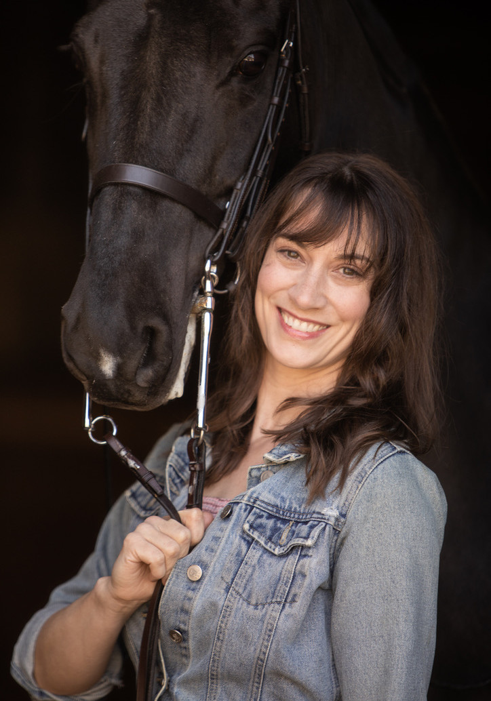

About
Emma
Hudelson
Nonfiction writer, teacher, and perpetual horse girl.

Emma Hudelson — writer & teacher
Biography
Writing about animals, women,
and the lives we live together.
Emma Hudelson is a nonfiction writer and teacher whose work centers on the intersection of animal life, female experience, and the body. She is an Assistant Professor of English at Eastern Kentucky University, where she is core faculty in the Bluegrass Writers Studio MFA program.
She holds a PhD in creative writing from the University of Cincinnati, where she began developing her distinctive voice — one that braids personal memoir with rigorous reporting, lyric sensitivity with deep subject expertise.
"On his long back, the horse carries more than his human's physical weight. He holds hopes, sorrows, and fears and transmutes them into motion."
Her essays and criticism appear in The Cincinnati Review, The Chattahoochee Review, The Rumpus, BUST, Flying Island Journal, and Southeast Review. She is a regular contributor to Saddle & Bridle, the American Saddlebred's premier publication, where she covers horses, horsepeople, and the culture of the show ring.
Her debut book, Sky Watch: Chasing an American Saddlebred Story (University Press of Kentucky, 2024), won the 2025 Equine Media Award and was a Foreword Reviews INDIES Award Finalist. It tells the story of a legendary Saddlebred stallion — four World Grand Championships, twelve World titles — and Emma's own parallel journey as a horsewoman trying to understand her obsession before it changed everything.
Beyond her academic work, Emma directs the Writing for Wellness initiative, leading workshops for teens and adults in addiction recovery, medical students, healthcare workers, and community members across Indiana.

Debut Book
Sky Watch: Chasing an American Saddlebred Story
University Press of Kentucky · March 2024 · 280 pages
Order from UPKWhat People Are Saying
Praise for Sky Watch
"Hudelson writes with the precision of Susan Orlean and the narrative propulsion of Laura Hillenbrand — a debut that announces a major new voice in literary nonfiction."
— Advance Praise
"At once an education and an entertainment — seamlessly braiding memoir with historical detail about championship competition and the deep bond between human and horse."
— Foreword Reviews
"Winner of the 2025 Equine Media Award. A book that anyone who has ever loved a horse — or tried to explain why — will recognize as true."
— 2025 Equine Media Award